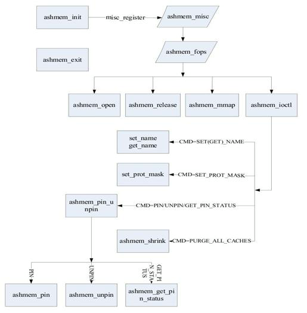

Ashmem Analysis
Table of Contents
1 Code Analysis
1.1 Important data struct
A "area" cache and a "range" cache are created first in ashmem_init(), and then register a misc device named ashmem, at last, using register_shrinker() register a callback, there are two important struct in the code as following:
/*
* ashmem_area - anonymous shared memory area
* Lifecycle: From our parent file's open() until its release()
* Locking: Protected by `ashmem_mutex'
* Big Note: Mappings do NOT pin this structure; it dies on close()
*/
struct ashmem_area {
char name[ASHMEM_FULL_NAME_LEN]; /* optional name in /proc/pid/maps */
struct list_head unpinned_list; /* list of all ashmem areas */
struct file *file; /* the shmem-based backing file */
size_t size; /* size of the mapping, in bytes */
unsigned long prot_mask; /* allowed prot bits, as vm_flags */
};
/*
* ashmem_range - represents an interval of unpinned (evictable) pages
* Lifecycle: From unpin to pin
* Locking: Protected by `ashmem_mutex'
*/
struct ashmem_range {
struct list_head lru; /* entry in LRU list */
struct list_head unpinned; /* entry in its area's unpinned list */
struct ashmem_area *asma; /* associated area */
size_t pgstart; /* starting page, inclusive */
size_t pgend; /* ending page, inclusive */
unsigned int purged; /* ASHMEM_NOT or ASHMEM_WAS_PURGED */
};
1.2 The init flow of ashmem
In ashmem_init() function, using the following steps to prepare all needed:
- A area cache created first with kmem_cache_create()
which is named "ashmem_area_cache", add object size is the size of struct ashmem_area.
- A range cache create as above
- registered a misc dist for exporting a interface to user
after this step, user can access /dev/ashmem device with open, read, mmap, and other file operation to use the ashmem.
- Register a shrinker hook
At the end of ashmem_init(), it is register a shrinker with register_shrinker() to reclaime the freed area.
1.3 The overview of ashmem
after open the ashmem device, user can use ioctl to pin and unpin a area, if the range is unpined, the area can be purged by system, and purged is assigned from ASHMEM_NOT_PURGED to ASHMEM_WAS_PURGED, and the code architecture as following:

Above graph come from: http://www.linuxidc.com/Linux/2011-09/42212.htm
2 How to use in user space
- Open the shmem first
int fd, ret;
char buf[ASHMEM_NAME_LEN];
fd = open(ASHMEM_DEVICE, O_RDWR);
if (fd < 0)
return fd;
strncpy(buf, name, sizeof(name) + 1);
ret = ioctl(fd, ASHMEM_SET_NAME, buf);
if (ret < 0)
goto error;
ret = ioctl(fd, ASHMEM_SET_SIZE, size);
if (ret < 0)
goto error;
return fd;
error:
close(fd);
return ret;
3 Remap the area to process address
size = ioctl(fd, ASHMEM_GET_SIZE, NULL);
printf("size=%d\n", size);
mAddress = (unsigned int *)mmap(NULL, LENGTH, PROT_READ | PROT_WRITE, MAP_SHARED, fd, 0);
if (mAddress < 0)
printf("mmap failed\n");
4 Read/Write the area directly
if (ashmem_pin_region(fd, 0, 0) == ASHMEM_WAS_PURGED)
{
printf("ashmem was purged\n");
return -1;
}
printf("%s: address=0x%x, buffer=0x%x\n", __FUNCTION__, (unsigned int)address, (unsigned int)buffer);
memcpy(buffer + src_offset, (unsigned char *)address + dest_offset, count);
return count;
if (ashmem_pin_region(fd, 0, 0) == ASHMEM_WAS_PURGED)
{
printf("ashmem was purged\n");
return -1;
}
memcpy((unsigned char *)address + dest_offset, buffer + src_offset, count);
return count;
whole file: ashmem_app.c
5 How to share the ashmem between two process
In order to share the ashmem, one process must open the ashmem first, and share the file handler to the other process, then the process can use the file handle to mmap the area to it's own process address, after remaped the area, can read/write the area directly. The key work is how to share the file handle to other process. in task struct there is a field to save all opened the file.so i wrote a driver to do the work, to pass the fd from one to another, the driver as following: Share File Handle Driver to have a test with following steps:
- compile the share file driver in kernel(shfile_file.c and shfile_file.h)
- use kexec to run the kernel directly
- make the ashmem_app
- open two terminal, one run "ashmem_app s" as a server, and the other run "ashmem_app c" as a client.